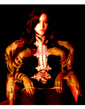

Directions
450 Harrison Avenue #61 Boston, MA 02118
North of Boston
Take I-93 through the BIG DIG Tunnel to the Mass Pike/Albany Street Exit. TAKE THE ALBANY STREET EXIT 20-B. Stay in left lane and go to Albany Street (do NOT get on the Mass Pike!!) Go straight on Albany Street through two traffic lights and turn right at E. Berkeley Street (there is a Mobil Gas Station on the corner). Proceed one block to Harrison Avenue and turn left. There is parking at 500 Harrison Avenue lot adjacent to 460 Harrison Avenue building.
South of Boston
Take I-93 to the Mass Ave/Roxbury Exit (Exit 18). Follow the off ramp to 5th traffic light (sign at corner say "South End/Back Bay") and turn left onto E. Berkeley Street. Proceed one block to Harrison Avenue and turn left.
West of Boston
Follow the Mass Pike to the Copley Square exit. As you exit the tunnel, bear right. You are on Dartmouth Street heading toward the South End. Stay on Dartmouth, cross Tremont St and continue on West Dedham Street until you come to Harrison Avenue. Turn left onto Harrison Avenue.
Using the MBTA
Take the orange line to the New England Medical Center T stop. Change and take the SILVER LINE bus to the East Berkeley Street Stop or the Union Park Street Stop.
Or if you prefer to walk: At the NEMC T Stop, use the exit pointing towards Washington Street. Take a right on Washington Street and walk for three blocks. Take a left onto East Berkeley Street. At the end of the block, take a right onto Harrison Avenue. Start looking at art!